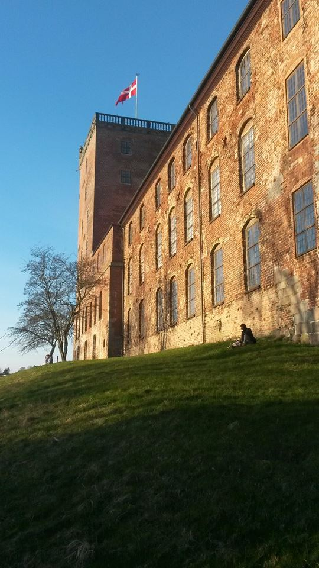
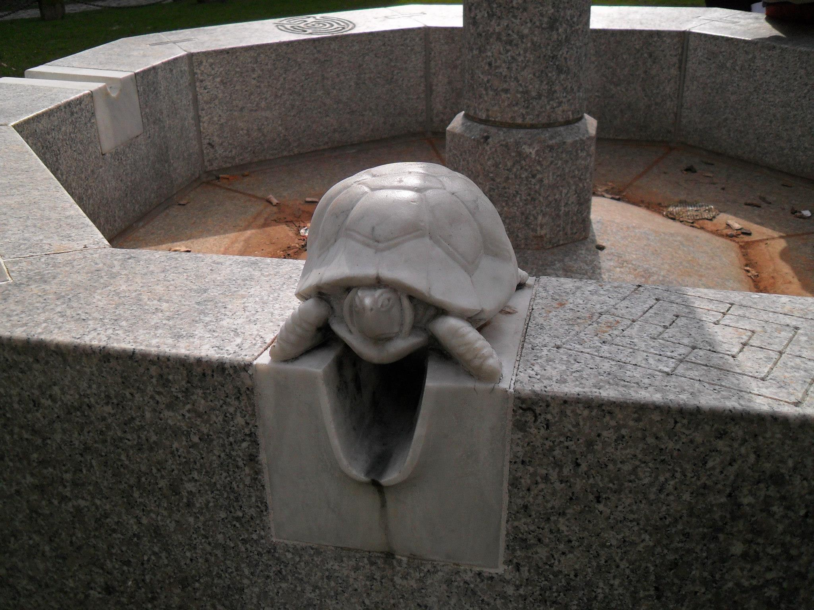
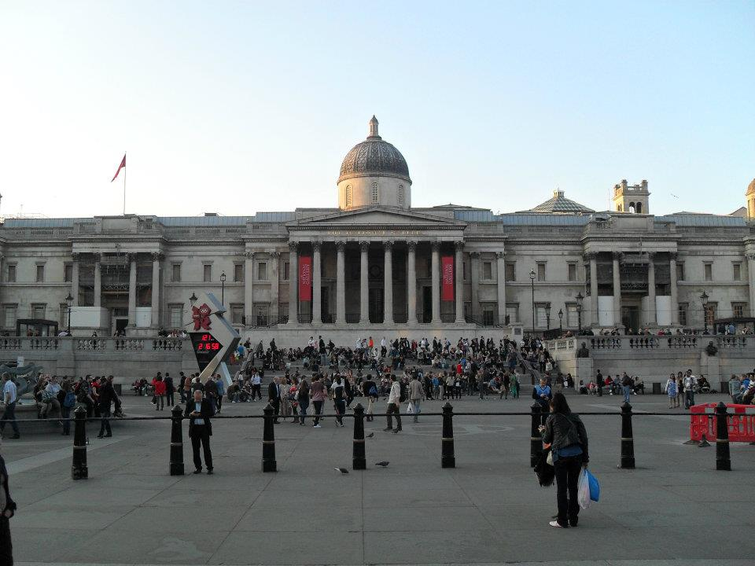

Gepost op 24 mei 2016
Once upon a time, I was a student business informatics at the AP college Antwerp. They had a program to spend 10 days in Denmark to make a game with other students from around the world, And I seized the opportunity.
We booked our flight, because I wasn't alone. I had my own gang of misfits to join me in this journey to the unknown. So I went to Denmark and didn't know what to expect. Our first encounter with a Danish person wasn't the best,
Nicolas made a stupid joke and a random man got offended en tried to injure him. But it was eigth against one so he didn't try much. ...
Gepost in: Travel, Blog, Existential
Met tags: Travel, Denmark, Kolding

The best town in Germany
Gepost op 22 mei 2016
When studying the languages ent me to Germany, I was a bit sad. I didn't like the germans very much and had to interview a few. Ofcourse the reason for me to dislike germans is pure a grudge from WWII. And the suffering
it caused my family. But after some time I became wiser and I forgave the Germans and went to Köln or Colonia as some of them called it. I interviewed a lovely old couple and they explained why this town is so lovely
and what the best places were in Köln. ...
Gepost in: Travel, Blog, Existential
Met tags: Travel, Germany, Köln

Big trouble in little London
Gepost op 14 mei 2016
Gepost in: Travel, Blog, Existential
Met tags: Travel, England, London